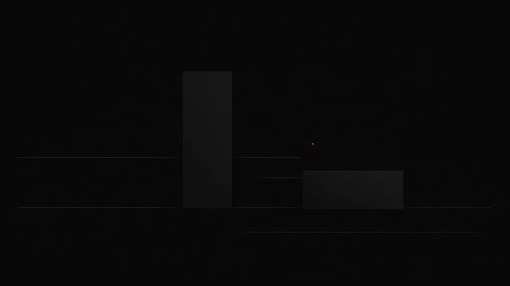

Questions fréquentes
Avant de commander l’architecture.
Les réponses ci-dessous fixent le périmètre des 990 €. Le déploiement n’y est pas inclus.
990 € · 7 jours ouvrés après réception du dossier complet

Que vais-je recevoir pour 990 € ?
Une architecture personnalisée : organisation actuelle et cible, processus prioritaires, intégration envisagée des outils, agents possibles, règles de contrôle, feuille de route de déploiement.
Est-ce qu’EXIOR installe les agents en 7 jours ?
Non. Les 7 jours ouvrés couvrent la conception et la livraison de l’architecture. Le déploiement réel est une prestation distincte, sur devis.
Faut-il remplacer nos logiciels ?
Pas nécessairement. La méthode part des outils existants et examine comment les relier ou compléter leurs fonctions, selon leurs possibilités d’intégration.
L’architecture est-elle standardisée ?
La méthode est structurée. L’analyse, les parcours, les choix d’architecture et la feuille de route sont ceux de votre entreprise.
Que se passe-t-il si nos logiciels n’ont pas d’API ?
L’architecture écrit les possibilités, les limites, les alternatives et les actions laissées aux collaborateurs. Aucune connexion n’est garantie sans vérification.
Qui garde le contrôle ?
Votre entreprise conserve les décisions et les permissions métier. Le plan définit les validations, les droits et les responsabilités à maintenir lors d’un déploiement.
Les données sont-elles protégées ?
La conception identifie les mesures de sécurité, d’accès et de protection à intégrer. Une mise en production ultérieure fera l’objet de dispositions techniques et contractuelles, notamment au regard du RGPD. L’hébergement n’est pas inclus dans la conception.
Quel est le coût du déploiement et de la maintenance ?
Il dépend du périmètre, des logiciels, des volumes et de la sécurité. EXIOR propose un devis après l’architecture. Aucun prix universel de déploiement ou d’abonnement n’est affiché.
Sommes-nous obligés de déployer avec EXIOR ?
Non. L’architecture est une prestation autonome. Le déploiement est facultatif.
Quand commence le délai de 7 jours ouvrés ?
À réception du dossier complet nécessaire à l’analyse.